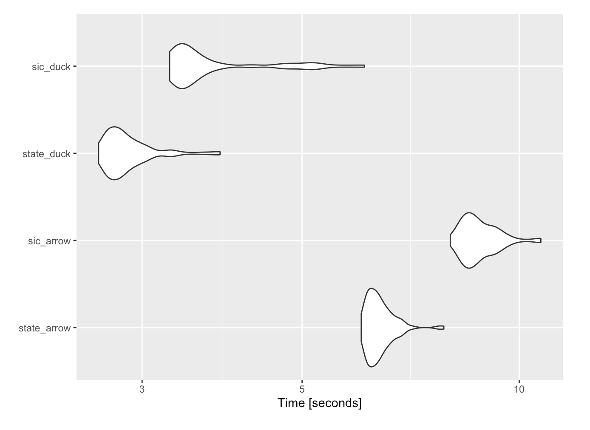

Setup
library(data.table)
library(glue)
library(arrow)
##
## Attaching package: 'arrow'
## The following object is masked from 'package:utils':
##
## timestamp
library(duckdb)
## Loading required package: DBI
library(tictoc)
##
## Attaching package: 'tictoc'
## The following object is masked from 'package:data.table':
##
## shift
library(ggplot2)
library(scales)
library(dplyr)
##
## Attaching package: 'dplyr'
## The following objects are masked from 'package:data.table':
##
## between, first, last
## The following objects are masked from 'package:stats':
##
## filter, lag
## The following objects are masked from 'package:base':
##
## intersect, setdiff, setequal, union
library(bit64)
## Loading required package: bit
##
## Attaching package: 'bit'
## The following object is masked from 'package:data.table':
##
## setattr
## The following object is masked from 'package:base':
##
## xor
## Attaching package bit64
## package:bit64 (c) 2011-2017 Jens Oehlschlaegel
## creators: integer64 runif64 seq :
## coercion: as.integer64 as.vector as.logical as.integer as.double as.character as.bitstring
## logical operator: ! & | xor != == < <= >= >
## arithmetic operator: + - * / %/% %% ^
## math: sign abs sqrt log log2 log10
## math: floor ceiling trunc round
## querying: is.integer64 is.vector [is.atomic} [length] format print str
## values: is.na is.nan is.finite is.infinite
## aggregation: any all min max range sum prod
## cumulation: diff cummin cummax cumsum cumprod
## access: length<- [ [<- [[ [[<-
## combine: c rep cbind rbind as.data.frame
## WARNING don't use as subscripts
## WARNING semantics differ from integer
## for more help type ?bit64
##
## Attaching package: 'bit64'
## The following object is masked from 'package:utils':
##
## hashtab
## The following objects are masked from 'package:base':
##
## :, %in%, is.double, match, order, rank
library(microbenchmark)
uscompany <- "~/Documents/Projects/uscompanies/data/"
options(scipen = 999)
knitr::opts_chunk$set(echo = TRUE, warning = FALSE)
Introduction
It has been a while since loading Large, Messy CSV using {data.table} fread with CLI tools, but there are fast developing tools, which we didn’t fully understand at the time, making the problem discussed more manageable. When we left off, we had used scrubcsv split our problematic csv into two parts, a clean 30 million-row, 28-column data set of US business addresses, and a separate 1 million-rows with 22 or fewer columns. It was interesting to see what could be done on the CLI, but stacking the two significantly different subsets seemed cumbersome, considering varying column names and types, when one would not fit in memory. The objective of this posting will be to explore how to load the two pieces of our address data into arrow tables, standardize variable types, stack and queries. One of the main themes of this blog all along has been, how to become as agnostic as possible to data size, it feels like this moment may have arrived with {arrow} and {duckdb}.
Other Resources
We usually try to give credit to commentators who have made our learning possible, so here are a few that have made this post possible:
Loading an {arrow} Table
First, we load the larger 30 million row clean data set, which has 28 columns with {arrow}’s read_csv_arrow(). In the previous post, we were using a 2015 iMac with 8G of RAM, and now, our new MacBook Air m1 with 16G of RAM. When we ran the same function on the older iMac taking the data instead as data.frame, the same data took almost 10 minutes to load, but on the new machine, it took about 1 minute (so the time savings are about 90% from the m1). We also tried to load on the m1 as a data.table with fread(), but gave up after about 15 minutes. Here, we will actually choose the option to take the input as an {arrow} table (setting as_data_frame = FALSE), which reduces load time takes a little further to 45 seconds. As an {arrow} table, the 7G of data takes up only 283kB of memory to be accessed via {dplyr} in RStudio. In the context of this size of data and machine, {data.table} doesn’t seem like a viable solution compared to {arrow}, either as a data.frame or an {arrow} table, much as we love it.
tic()
cleaned_arrow <-
arrow::read_csv_arrow(paste0(uscompany, "scrubbed.csv"), as_data_frame = FALSE)
cleaned_arrow
## Table
## 30266526 rows x 28 columns
## $COMPANY_NAME <string>
## $SIC_CODE <int64>
## $SIC_DESCRIPTION <string>
## $ADDRESS <string>
## $CITY <string>
## $STATE <string>
## $ZIP <int64>
## $COUNTY <string>
## $PHONE <int64>
## $FAX_NUMBER <string>
## $WEBSITE <string>
## $LATITUDE <string>
## $LONGITUDE <string>
## $TOTAL_EMPLOYEES <int64>
## $EMPLOYEE_RANGE <string>
## $SALES_VOLUME <double>
## $SALES_VOLUME_RANGE <string>
## $CONTACT_FIRSTNAME <string>
## $CONTACT_LASTNAME <string>
## $CONTACT_FULLNAME <string>
## $CONTACT_GENDER <string>
## $CONTACT_TITLE <string>
## $CONTACT2_FIRSTNAME <string>
## $CONTACT2_LASTNAME <string>
## $CONTACT2_TITLE <string>
## $CONTACT2_GENDER <string>
## $NAICS_NUMBER <int64>
## $INDUSTRY <string>
toc()
## 46.911 sec elapsed
lobstr::obj_size(cleaned_arrow)
## 283.62 kB
Loading and Preparing the Bad Data to Stack
Next, we will attempt to also load the bad data into an arrow table, but will be unsuccessful (as shown), because there are still troublesome rows remaining, even after separating most of the good rows out, because some of the rows only have 19, while most have 22 columns.
bad_csv <-
try(arrow::read_csv_arrow(paste0(uscompany, "bad_scrub_data.csv")))
## Error in (function (file, delim = ",", quote = "\"", escape_double = TRUE, :
## Invalid: CSV parse error: Expected 22 columns, got 19: "Ahlstrom, aaron",6282,FINANCIAL ADVISORY SERVICES,753 ameriprise financial ctr,Minneapolis,MN,5 ...
So, we go back to scrubscv and {data.table}, piping the command line function into fread(), and 1 million rows with the retained 22 columns takes about a second to load, throwing out 5,598 rows thrown out for having a non-standard number of columns. For this amount of data, it is hard to think of a better option!
cmd <- glue("scrubcsv { paste0(uscompany, 'bad_scrub_data.csv') }")
bad_data <- fread(cmd= cmd)
As mentioned previously, scrubcsv takes bad rows (ie: less than 22 columns in this case) and throws them out. It also doesn’t import column names with the discarded rows, so these have to be manually added after the fact, and since the table scan will be a significantly different amount of rows, it seems reasonable to expect some types may vary. We threw out the names of columns which were missing from bad_data, and then mapped to the appropriate column names in cleaned_arrow so that we could stack.
table_names <- names(cleaned_arrow)
names(bad_data) <-
table_names[
!table_names %in% c(
"CONTACT2_FIRSTNAME",
"CONTACT2_LASTNAME",
"CONTACT2_TITLE",
"CONTACT2_GENDER",
"NAICS_NUMBER",
"INDUSTRY"
)]
For next part, we had quite a few false starts before we figured it out. {arrow} allows to bind rows, but column names have to match, and columns have the same data types. If we wanted to be picky, we might change some of the column types {arrow} chose for cleaned_arrow. For example, {arrow} chose Utf8 for the LON/LAT columns, which wasn’t what we expected, because they seemed to be numeric. For the definitive discussion of {arrow} data types though, please see Data types in Arrow and R. It is possible to convert data types in arrow tables, but it was not nearly as straightforward for us as doing it with {data.table} before converting to {arrow}.
# Convert integers, character and numeric to align with arrow types in cleaned_arrow
convert_ints <-
c("SIC_CODE", "ZIP", "TOTAL_EMPLOYEES")
bad_data[
, (convert_ints) := lapply(.SD, bit64::as.integer64)
, .SDcols = convert_ints]
convert_utf8 <-
c("CONTACT_FULLNAME", "CONTACT_GENDER", "LONGITUDE", "LATITUDE")
bad_data[
, (convert_utf8) := lapply(.SD, as.character)
, .SDcols = convert_utf8]
bad_data[, SALES_VOLUME := as.numeric(SALES_VOLUME)]
After trial and error, we learned that by mapping R integer types to {arrow} int64, character to Utf8 and numeric to double, everything worked, and the conversion from {data.table} to {arrow} takes only an instant, so again timing is not shown.
# Convert to arrow table
bad_data_arrow <-
arrow::as_arrow_table(bad_data)
bad_data_arrow
## Table
## 1070764 rows x 22 columns
## $COMPANY_NAME <string>
## $SIC_CODE <int64>
## $SIC_DESCRIPTION <string>
## $ADDRESS <string>
## $CITY <string>
## $STATE <string>
## $ZIP <int64>
## $COUNTY <string>
## $PHONE <int64>
## $FAX_NUMBER <string>
## $WEBSITE <string>
## $LATITUDE <string>
## $LONGITUDE <string>
## $TOTAL_EMPLOYEES <int64>
## $EMPLOYEE_RANGE <string>
## $SALES_VOLUME <double>
## $SALES_VOLUME_RANGE <string>
## $CONTACT_FIRSTNAME <string>
## $CONTACT_LASTNAME <string>
## $CONTACT_FULLNAME <string>
## $CONTACT_GENDER <string>
## $CONTACT_TITLE <string>
##
## See $metadata for additional Schema metadata
At first, we thought we might have to add the 6 missing columns and set the column order of bad_data_arrow to match those in cleaned_arrow, but it seems to work without adjusting column order or instructions to fill empty rows. Stacking the two data sets only takes an instant (so we are again not showing timing), and gives almost the full 31 million row data set we originally set out to load.
# Clean up and bind arrow tables
full_data <-
arrow::concat_tables(cleaned_arrow, bad_data_arrow)
full_data
## Table
## 31337290 rows x 28 columns
## $COMPANY_NAME <string>
## $SIC_CODE <int64>
## $SIC_DESCRIPTION <string>
## $ADDRESS <string>
## $CITY <string>
## $STATE <string>
## $ZIP <int64>
## $COUNTY <string>
## $PHONE <int64>
## $FAX_NUMBER <string>
## $WEBSITE <string>
## $LATITUDE <string>
## $LONGITUDE <string>
## $TOTAL_EMPLOYEES <int64>
## $EMPLOYEE_RANGE <string>
## $SALES_VOLUME <double>
## $SALES_VOLUME_RANGE <string>
## $CONTACT_FIRSTNAME <string>
## $CONTACT_LASTNAME <string>
## $CONTACT_FULLNAME <string>
## $CONTACT_GENDER <string>
## $CONTACT_TITLE <string>
## $CONTACT2_FIRSTNAME <string>
## $CONTACT2_LASTNAME <string>
## $CONTACT2_TITLE <string>
## $CONTACT2_GENDER <string>
## $NAICS_NUMBER <int64>
## $INDUSTRY <string>
Test Query and Benchmarking
It is amazing to get around all of the memory problems so easily, just by converting to an {arrow} table, but it doesn’t take long to then become greedy to for efficient data manipulation. To put it through the paces, we set up a test query to filter unique COMPANY_NAME on an aggregating variable (STATE or SIC_DESCRIPTION), count the number of occurrences, arrange in descending count order, filter the top 10 values (see hidden code below) and collect back into an R data.frame. STATE has only 51, but SIC_DESCRIPTION has 8,665 distinct values so should be a bigger lift to aggregate. We had heard by simply plugging in {duckdb} to_duckdb() into our {dplyr} chain, we might improve the performance of the query, so have included an option for that in our benchmark examples below. Below we show the query run once with just the {arrow} table (at around 10 seconds), which is substantially slower than the average of the same query, once we run it 100 times in our benchmarks.
See code
# Sample duckdb/arrow query function
test_agg <- function(data, agg_var, duck = FALSE) {
if ( isTRUE(duck) ) {
data <- data |> to_duckdb()
}
data |>
select( {{agg_var}}, COMPANY_NAME) |>
group_by({{agg_var}}) |>
distinct(COMPANY_NAME) |>
ungroup() %>%
group_by({{agg_var}}) |>
summarize(n = n()) |>
ungroup() |>
arrange(desc(n)) |>
head(10) |>
collect()
}
# Test run of query function
tic()
test_agg(full_data, agg_var=STATE)
## # A tibble: 10 × 2
## STATE n
## <chr> <int>
## 1 CA 2815269
## 2 FL 2022421
## 3 TX 1949658
## 4 NY 1498688
## 5 PA 917881
## 6 IL 914293
## 7 MI 755170
## 8 NC 732892
## 9 NJ 730344
## 10 VA 617868
toc()
## 10.399 sec elapsed
So here, we benchmark four queries, aggregating on STATE and SIC_DESCRIPTION with and without duckdb. The big surprise here was how big an impact {duckdb} had with so little effort, reducing query time by 55-60%. It also seemed to make the query run with much less variability, but will leave that to the experts to explain.
See code
# Microbenchmark on 100 iterations
mbm <- microbenchmark::microbenchmark(
"state_arrow" =
test_agg(full_data, agg_var = STATE),
"sic_arrow" =
test_agg(full_data, agg_var = SIC_DESCRIPTION),
"state_duck" =
test_agg(full_data, agg_var = STATE, duck=TRUE),
"sic_duck" =
test_agg(full_data, agg_var = SIC_DESCRIPTION, duck=TRUE)
)
mbm
## Unit: seconds
## expr min lq mean median uq max neval cld
## state_arrow 6.039366 6.207929 6.411865 6.332908 6.527128 7.861368 100 c
## sic_arrow 8.025354 8.423692 8.827753 8.684798 9.171409 10.714919 100 d
## state_duck 2.610817 2.703065 2.875179 2.800053 2.930623 3.848137 100 a
## sic_duck 3.275613 3.376994 3.812775 3.474520 3.824492 6.103654 100 b
## Coordinate system already present. Adding new coordinate system, which will
## replace the existing one.

When we were playing around, it seemed like the first time we ran a query was slower than after a few times. It seems like there might be a cost to moving over to duckdb, but we didn’t know how that would work. Looking at the time series of the queries, it looks like the first query was often slower, and then have big spikes in volatility after a while. Possibly not surprising, the larger group aggregation (SIC_DESCRIPTION) was more volatile, but it seems clear that {duckdb} makes query time more consistent.
See code
# Over time
mbm1 <- as.data.table(mbm)
mbm1[, trial := rowidv(mbm1, cols="expr")]
p <- ggplot2::ggplot(mbm1,
aes(
x = trial,
y = time,
group = factor(expr),
color = factor(expr)
)) +
geom_line() +
scale_y_continuous(
labels = scales::label_number(scale = 1e-9)) +
labs(x = "Trial",
y = "Time [seconds]")

Conclusion
Based on this analysis, {arrow} offers a big jump in flexibility around the kind of analysis which can be conducted, seamlessly with the same work flow, from a small machine. The ease with which one line of code (without fiddling with any parameters), {duckdb} significantly reduced query time, justifying for us a lot of the raving on Twitter. Possibly more excitement about {arrow} and the way it dovetails with everything RStudio has already created may warranted. We haven’t shown here, but also saved the data as parquet, and ran queries against it in the {duckdb} CLI with read_parquet(), and got the sense that responses were even faster (despite whatever ingestion time was needed), but maybe that may be for a future post. We cannot express enough gratitude to RStudio, and to all the people who have developed {arrow} and {duckdb} at this breakneck speed